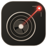
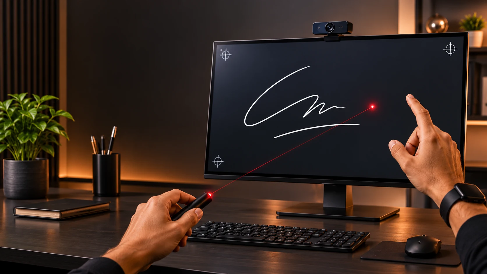

MODE 01 / PRECISIONLaser Writer
Track a red point, calibrate the screen and control the board.

AIRWRITEOPTICAL STUDIO TOUCHLESS INTERACTION SYSTEMWrite with a laser point. Navigate with your hand. Turn a compatible Windows display into a touchless creative surface.

Choose precise laser control or natural hand gestures. Both open the same AIRWRITE Smart Board on your Windows desktop.
Track a red point, calibrate the screen and control the board.
Point, pinch, pan and navigate with camera-tracked gestures.
WELCOME BACK
Start a laser-controlled session for precise pointing and calibration, or open Hand Gesture Studio for natural camera-based control. Both lead to your AIRWRITE Smart Board.
Pick a mode to open the real Windows desktop application.
Your browser is the control centre. Your existing Windows app performs camera capture, laser detection, screen mapping and Smart Board actions.
Select the built-in laptop camera, a connected USB webcam or DroidCam. Preview and confirm the exact feed before calibration.
Retains the supplied OpenCV laser-candidate pipeline in air_writer.py.
Captures a fresh background and calculates the display mapping before cursor control.
Separate launch modes for laser control and webcam hand control, with one index-tip pointer, pinch drawing, V-sign pan, thumb-middle zoom and a temporal-stabilised gesture menu.
Pencil, eraser, colours, shapes, pages, undo, redo, scrolling and swipe typing.
OCR features are available when the optional Tesseract desktop installation is present.
Important: The laser animation on this page is a visual interface effect. The real camera feed, detection, calibration and writing run in the separate Windows desktop window launched by the button above.
Inspired by modern camera-first spatial drawing workflows such as AirVA, adapted to AIRWRITE’s Windows Smart Board and existing laser tools. Use the gesture launcher to open the laptop or USB webcam.
After the three-finger menu opens, point to an option, let it highlight, then pinch and release. Only the index fingertip moves the pointer; other fingertips classify gestures. Pan and menu poses need agreement in 3 of the latest 5 frames. The hand menu can reach Cursor, Drag, Pen, Smart Write, Swipe Type, Eraser, Shapes, Scroll, color and brush size, page navigation, Undo, Redo, Save PNG, Export PDF, Clear page and Close Board.
Camera privacy by design. The hand-gesture button automatically prefers the laptop built-in webcam in the local desktop app. The laser mode keeps its independent DroidCam/USB camera profile. Hand landmarks are processed locally; the website does not upload or record camera frames. Hand mapping is separate for each chosen camera.
Explore education pilots, classroom deployments and technology partnerships. Pilot enquiries are saved securely to the AIRWRITE cloud database.
Evaluate writing, teaching and presentation workflows.
Schools · CollegesAssess touchless screen control for training and demos.
Teams · TrainingExplore hardware kits, integration and deployment.
Resellers · IntegratorsThese are proposed deployment paths for evaluating the product. Pricing is provided after the camera, screen and installation requirements are reviewed; no unverified price is shown.
For personal demos, educators and creators.
For schools, colleges and coaching centres.
For multi-room and enterprise deployments.
Complete the details below. This form saves a record in the secure AIRWRITE cloud database, visible to the owner account in the Owner Dashboard.
For product demonstrations, education pilots and collaboration enquiries.
View account registrations and pilot enquiries saved in the secure AIRWRITE cloud database.
| Loading owner data… |
Passwords are never displayed. They are stored as salted PBKDF2 hashes. Never share your owner password or database credentials.